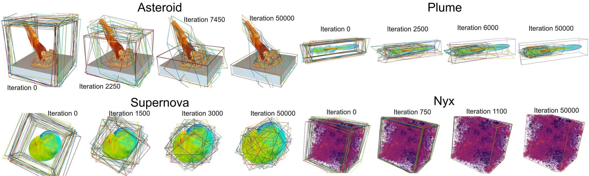

- Cloned the authors' repository and trained APMGSRN locally on Plume
- Adapted the environment for Windows and a 4 GB GPU
- nerfacc and tcnn could not be built, so we wrote a PyTorch ray marcher
- Verified the paper's findings on ghost cells and grid migration

Adaptive grids migrate toward detailed regions during training